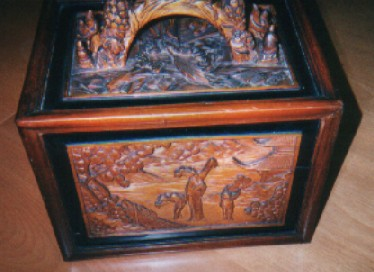
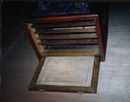
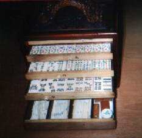
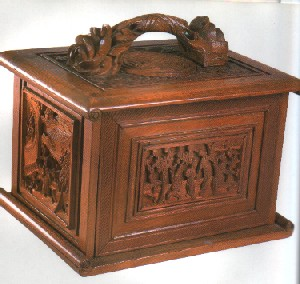
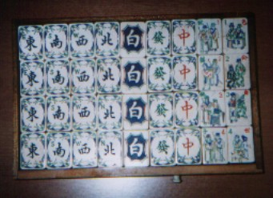
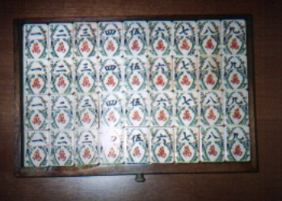
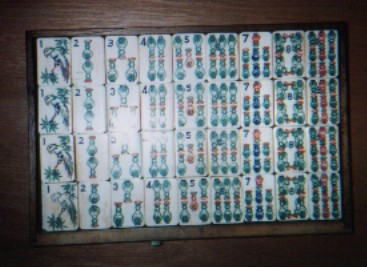
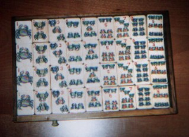

Tile colection 珍奇牌。
（1８）からくり箱入り、花弁牌
お正月なので、思いっきり貴重な牌をご紹介する。しかしせっかくの超貴重牌なのに、写真が最悪（みんなオイラが悪いのよ....)。いずれ撮り直すまで、勘弁してちゃぶだい。m(_ _)m
中身は後にして、まずは外箱から。
みての通り、唐木の木彫。しかしこの木彫がすごい。四方上面とも深〜い彫りとなっている。取っ手も八仙人の立像彫り。
しかしこの箱がすごいのは、すんごい彫りだけが理由ではない。普通、麻雀箱は、全面の扉を上に引きあげることによって開ける。しかしこの箱は、写真のように前面扉が手前に開く。といっても上部につまみがあるわけではない。からくり仕掛けになっていて、ある部分を両手の親指でグイッと押すと、蓋が手前にパタンと開く。↓
「両手の親指でグイッと押す」と書いたが、片手の親指でもやってやれないことはない。しかし力加減や箱をホールドする関係で、両手を使った方がやりやすい。また親指以外でも、押したければ押してもいいが、実際問題、物理的に難しい。こうして前面扉が開いた後、現れた引き出し牌を手前に引き出す。↓
※麻雀博物館にも、このような木彫箱が収蔵されているが、その収蔵品と匹敵するすばらしい箱である。＜麻雀博物館収蔵品↓＞
さて肝心の中身であるが、これがまたワンダフル！。

字牌や万子牌は、周りに装飾模様が施されていて一段と華やかである。この華やかな装飾を花弁にたとえ、このような牌を花弁牌と通称する。索子には装飾は施されていないが、竹模様が花瓶に置き換えられている。
また筒子の模様が変わっている。なんと全部、蟹さんだ！。
すべての牌にアルファベットのインデックスが入っていることで分かるように、完全に輸出用に作成された牌である。それもここまで手の込んだセットとなると、普及品ではない。アメリカの金持ちをターゲットにした高級牌である。いったい当時いくらしたんだろう。。。現在の相場としては、前回紹介した象嵌箱入りの軽く倍額の値段はする。といっても例によって具体的な値段はヒミツだ。(^0^；